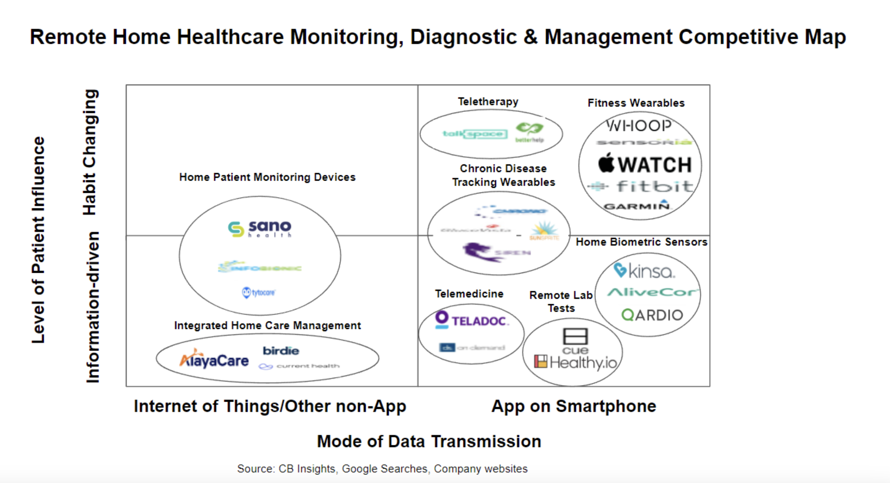
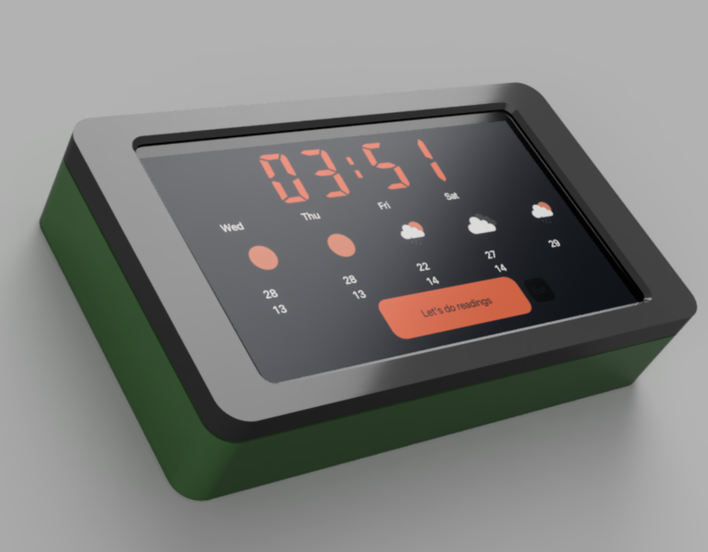
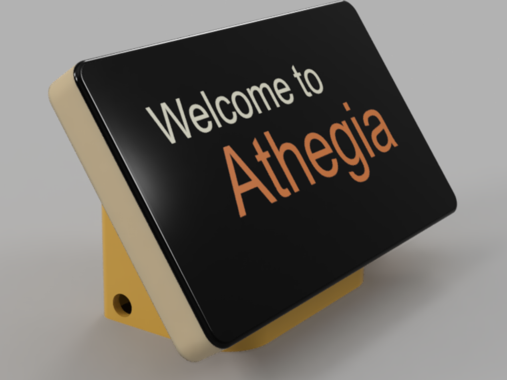
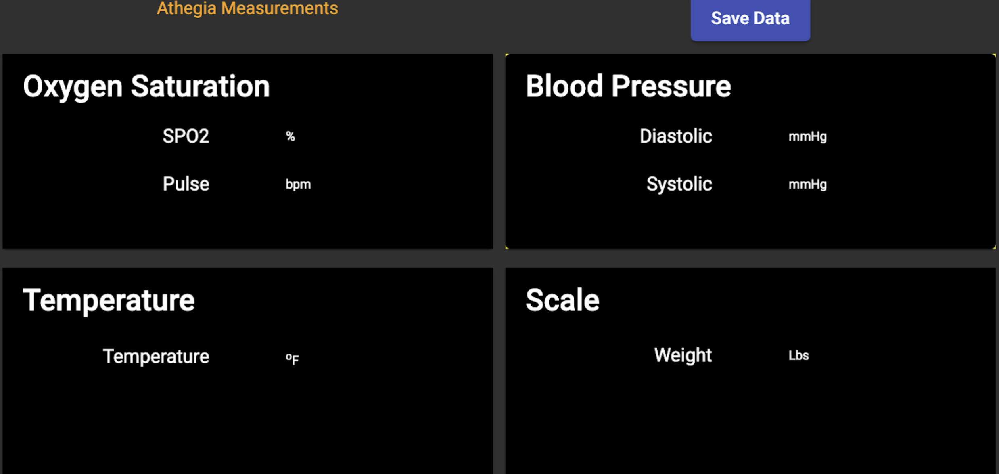

Chronic diseases symptoms, while highly predictable, are extremely deadly. I set out to change that.
Chronic diseases are a large and growing health problem in the US, and the main group affected by chronic diseases, senior citizens, has been largely ignored by the increasingly app- and smartphone-based solutions that monitor critical biometrics to prevent chronic disease flare-ups or critical life-threatening episodes.
What's the problem?
BJ Fogg, the founder of the Stanford Behavior Design Lab, famously said, “when it comes to habits, ease always beats motivation.” Even though there is a significant risk of hospitalization and dying, seniors find that current devices needed to take biometric data are too hard to use and time-consuming because of the different apps required by each sensor. This problem with solutions that rely on smartphone apps to collect and transmit data was confirmed by my own survey with more than 70 elderly participants.

Finding my gap is one of if not the most important step I can take on a project. I'm not expanding some niche field or providing genius technical expertise, so I need to make absolutely sure that a gap exists for my simple but powerful solution
Design Requirements
I needed a way to leverage the recent innovation in cheap, accurate BlueTooth sensors while avoiding the use of apps to build habits in senior citizens to take readings daily. The design requirements for such a device are as follows:
- The device needs be an appliance - as easy to approach as a '90's toaster, needing to be:
- Clean and simple
- Gently rounded edges
- No bezel on the screen
- No buttons
- Look solid and robust.
- The device needs to insert itself into the daily lives of each user, regardless of what their rigid schedule was like before the device
- Connect to any and all BlueTooth devices (with some support) to collect data from any source
- Aggregate and send the data to the cloud
- Analyize data in the cloud (perferably with as little doctor time as possible)
- Let the user know their current risk level as soon as possible
Prototype

Serious prototype #1
This prototype was built with a raspberry pi and a small screen in a simple and blocky enclosure made with CAD and printed with my personal 3D printer. It's interface was made purely in Python, with a weather app on the front (to insert itself into the daily lives of the users) and a single threaded, flask backend that could only connect to one device at a time
The problems:
The physical design was ugly - few people would want it on their kitchen counter or other very visible location, which would impede the habit-forming required. Finally, using only one device at a time prolonged the measurements significantly, and I needed to change that restriction.
The final product

Improvements:
With the feedback from a survey of 70 seniors, and a chat with an epidemiologist and chronic disease specialist, I refined the physical design to be approachable and displayable. The new system runs on a JavaScript frontend, which allows flexibility in choosing the main screen to best catch the attention of the user. Now, I can put any website as the main screen - news, sports, etc. I also improved my homemade weather app:

I also used asyncio, an asyncronous Python library, to allow the connection of multiple devices at once

Learnings
- How to create a frontend with HTML and CSS and with Python
- Core design of asyncronous coding
- Research competitors in a market
- Interact with Google Cloud
- Create sleek physical designs